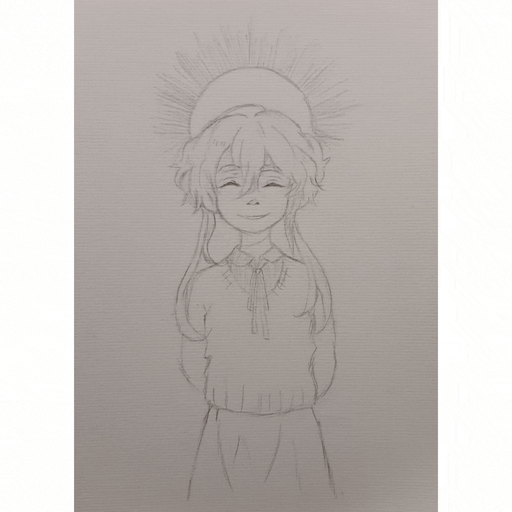
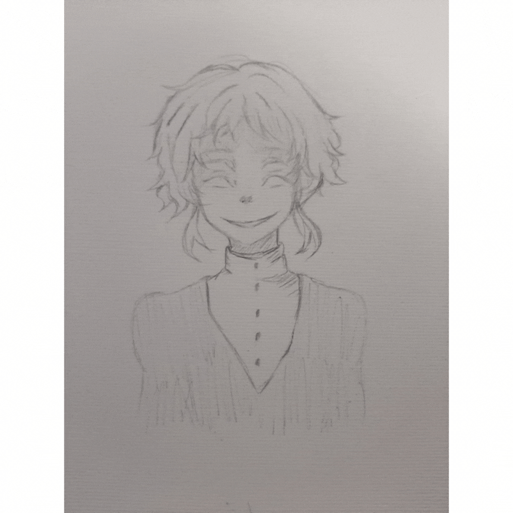
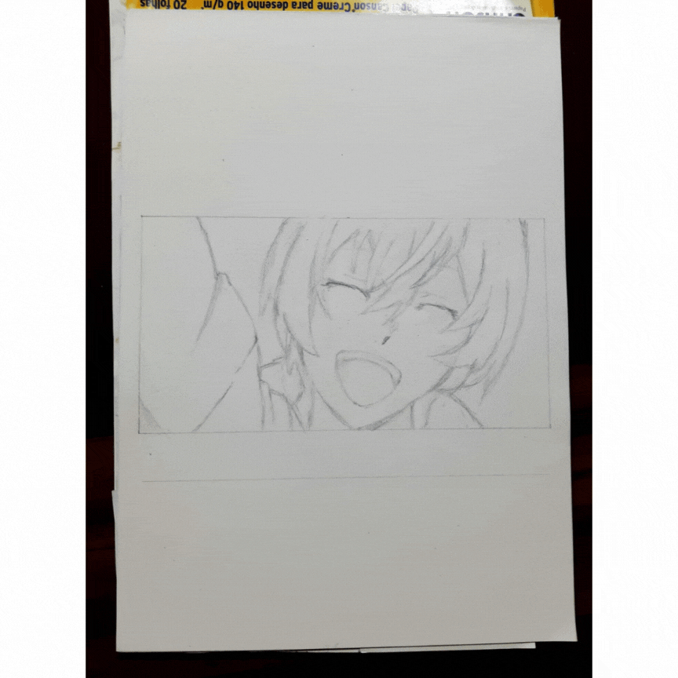
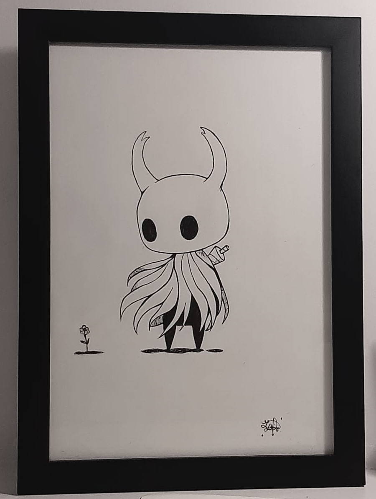
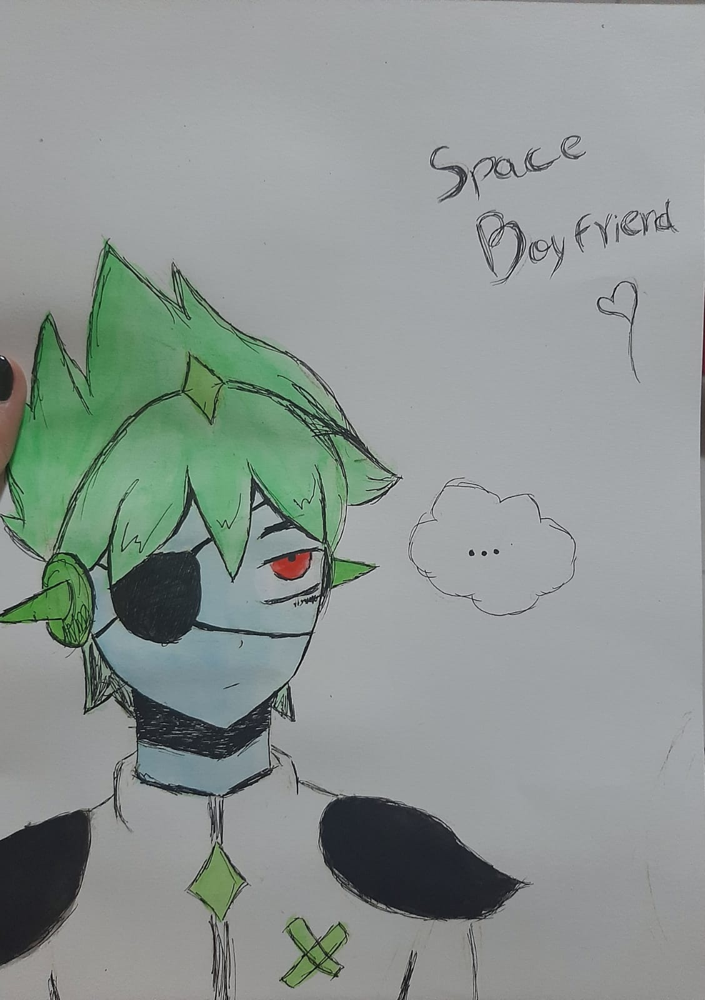
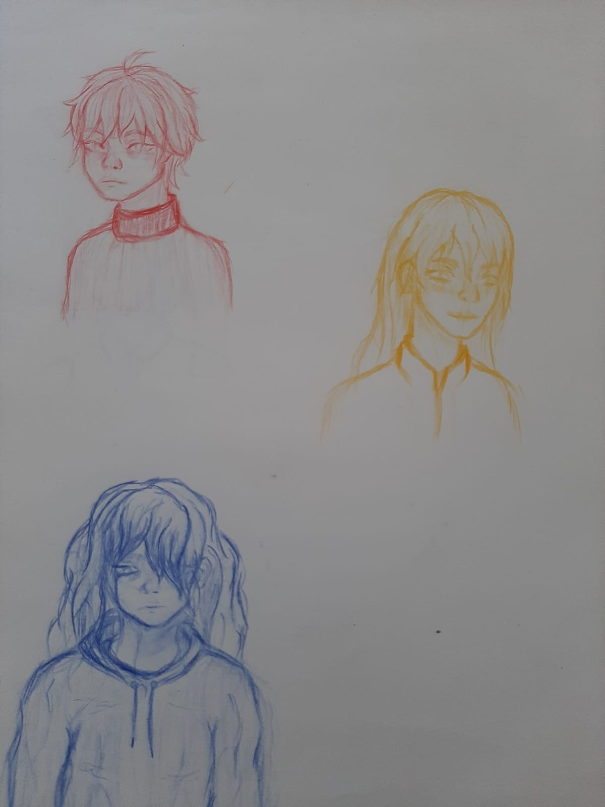
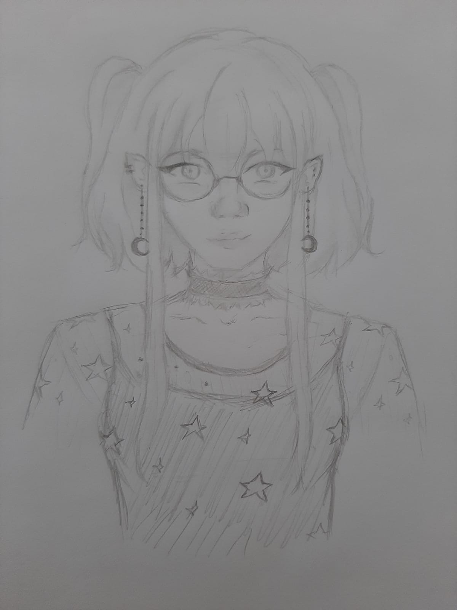

Entre uma das coisas que mais gosto de desenhar, estão meus personagens favoritos. Por isso, essa
seção vai falar um pouco sobre algumas dicas para desenhar qualquer personagem que você queira.
Por onde começar?
- Pesquise referências: Antes de começar a desenhar um personagem, pesquise referências
relacionadas ao estilo, idade, gênero e características físicas que você deseja retratar.
Estude imagens de pessoas reais, personagens de desenhos animados, quadrinhos ou ilustrações
para ajudar a desenvolver ideias e obter inspiração.
De início, você pode pegar exatamente a imagem que deseja desenhar, e conforme for ganhando
prática, ir mesclando com outras imagens ou ideias, até conseguir desenhar sem uma
referência específica.
- Crie esboços básicos: Comece com esboços simples para estabelecer a pose e a forma geral do
personagem. Use formas geométricas básicas, como círculos, retângulos e linhas, para
construir a estrutura inicial do corpo e das partes principais, como cabeça, tronco, braços
e pernas. Isso ajudará a estabelecer a proporção e a postura corretas.
Para aqueles que estão começando, uma coisa que me ajudou foi decalcar imagens de
personagens que eu gostaria de desenhar, assim eu conseguia pegar os traços mais facilmente
até conseguir desenhar sem depender do decalque.
- Detalhe o rosto e as expressões: O rosto é uma parte crucial na criação de um personagem
expressivo. Desenvolva os olhos, nariz, boca e orelhas com detalhes, considerando o formato
do rosto e a idade do personagem. Explore diferentes expressões faciais para transmitir
emoções e personalidade.
- Dê atenção aos cabelos e penteados: Os cabelos desempenham um papel importante na
caracterização do personagem. Considere a textura, o estilo e a cor dos cabelos para
refletir a personalidade e o estilo do personagem. Crie diferentes penteados e experimente
técnicas para representar os cabelos de maneira realista ou estilizada.
- Vista o personagem: A escolha do vestuário e dos acessórios pode ajudar a contar a história
do personagem. Pense na época, no ambiente e na personalidade do personagem ao selecionar
roupas e adereços. Adicione detalhes como padrões, botões, bolsos e outros elementos que
complementem a aparência do personagem.
- Brinque com proporções e estilos: Não tenha medo de brincar com as proporções e experimentar
estilos diferentes. Você pode criar personagens com corpos alongados, cabeças grandes, olhos
exagerados ou outras características distintas. Isso ajudará a criar personagens únicos e
interessantes.
- Pratique anatomia: Ter uma compreensão básica de anatomia humana é essencial para desenhar
personagens convincentes. Estude a estrutura do corpo, os músculos, as articulações e a
proporção correta das diferentes partes do corpo. A prática constante da anatomia irá
melhorar sua capacidade de desenhar personagens.
- Explore expressões corporais: Além das expressões faciais, preste atenção nas expressões
corporais e na linguagem gestual do personagem. Isso pode transmitir emoções, atitudes e
características específicas. Observe a postura, os gestos das mãos e a posição dos braços e
pernas para adicionar mais vida ao seu desenho.
- Use a psicologia das cores: As cores podem transmitir emoções e informações sobre o
personagem. Experimente diferentes paletas de cores para refletir a personalidade, o
ambiente ou o contexto do personagem. Use a psicologia das cores para transmitir emoções
específicas através das cores utilizadas.
- Pratique e experimente: Desenhar personagens requer prática e experimentação contínuas.
Dedique tempo regularmente para desenvolver suas habilidades e explore diferentes estilos,
técnicas e mídias de desenho. Não tenha medo de cometer erros e aprender com eles, pois isso
faz parte do processo de crescimento como artista.
Processos e outros desenhos
Abaixo estão alguns dos meus desenhos de personagens, com o processo até chegar no resultado
final. Geralmente vou fazendo o rascunho, uso uma caneta nanquim à prova d'água para o contorno
e finalizo com as sombras/pintura.

Processo do desenho - Charlotte Wiltshire

Processo do desenho - Frei

Processo do desenho - Kenji (Bungou Stray Dogs)

Desenho - Hollow Knight

Desenho - Namorado Espacial (Omori)
Eu também gosto de fazer personagens próprios, principalmente no meu caderno que reservo para
treinos e rascunhos. Recomendo bastante quem não tem um estilo de desenho tentar criar seus
próprios personagens!

Algumas das pessoas que já desenhei no meu sketchbook

Personagem que desenhei para um RPG